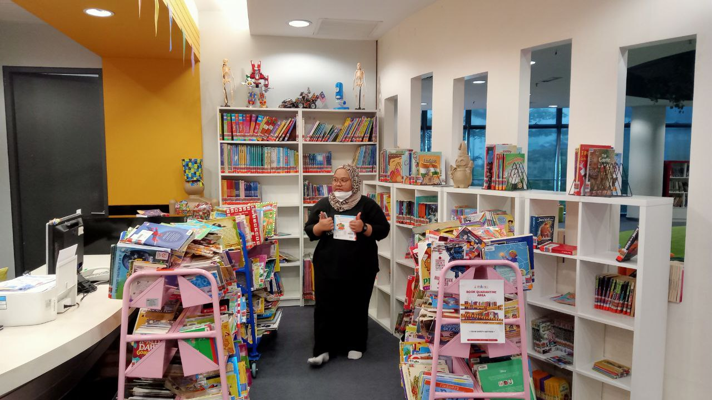
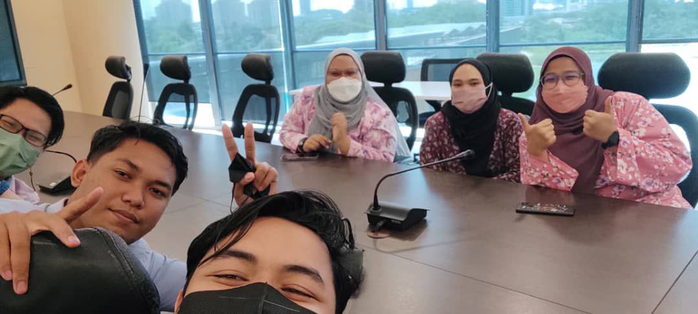
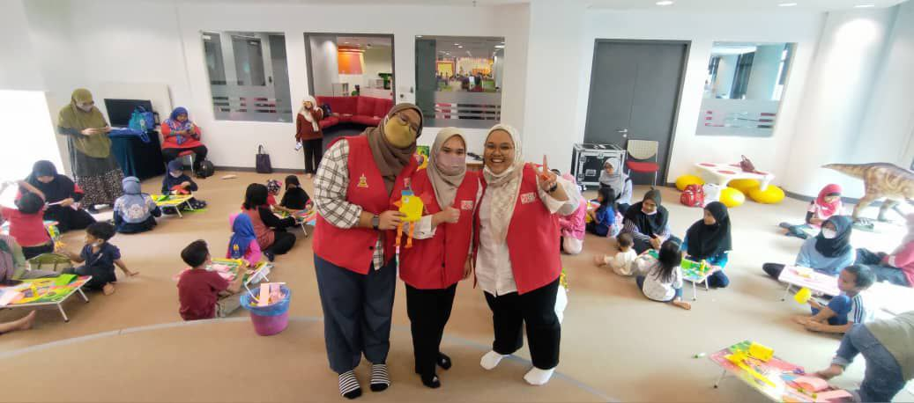
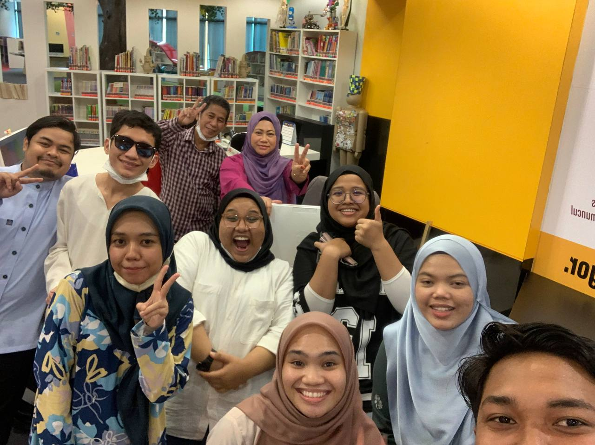

Experience during internship

I have chosen to complete my internship in Perpustakaan Raja Tun Uda, Shah Alam, a public library.

I receive training in a library science programme while working as a librarian, and I gain more knowledge of how libraries run daily.

Due to this internship, I have the opportunity to establish significant relationships with employees in my field of interest. Connect with people in my network to exchange knowledge, contacts, and contacts for encounters that will be useful for both organizations.

Being an intern with the Selangor Public Library Corporation offers the opportunity to help with the running of the "Program Cuti Sekolah @ Pustaka Raja Tun Uda" programme. These opportunities allowed me to study how my teammates interacted with staff members,and volunteers.

Overall, there are a lot of things that each department can educate us. I’ve have been exposed to the information and knowledge presented very well by all of the personnel who assist in outlining the job scope and provide demonstrations of how the work is done.